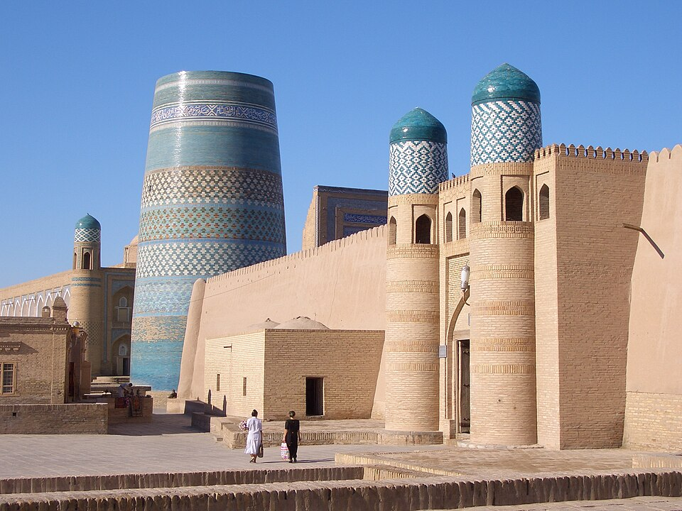

Ориентир
Кальта-Минор
Широкий и низкий минарет, целиком в синей и зелёной плитке. Стройку остановили в 1850-х, так что минарет остался недостроенным. Стоит у западных ворот Ичан-Калы.
- Город
- Хива
- Построен
- 1850-е годы
- Что это
- недостроенный минарет
- Координаты
- 41.3783, 60.358